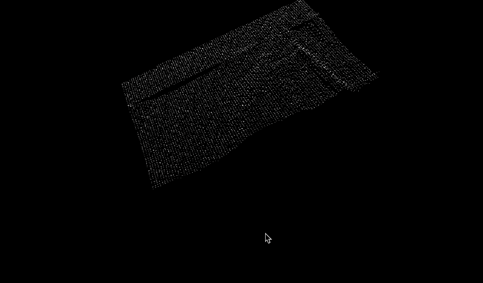

3D Scanner
Fall 2017
2 Weeks
Collaborators:
Christina Brown
For my physical computing class, I built a low-resolution 3D scanner with an IR proximity sensor, a couple of hi-torque servo motors, and an Arduino Uno. For this project, I programmed the Arduino and Processing scripts, while my partner, Christina, focused on the fabrication.
Process
There are two independent parts of this mechanism: the panning head and the moving bed. The idea of this project is that for every point on the bed, the head will scan the distance between it and the bed. The aggregate grid of points in space would ideally resemble the object scanned.
The full system. There are two servos with gears that move two sliding surfaces.
One servo is used to constantly move the IR sensor back and forth, while it is reading and recording the distance.

Every time the sensor does one loop and returns to its original position, the bed shifts forward one notch.

Limitation or Feature?
The problem was that the IR sensor is not meant to measure distances of specific points. Because of this, all the point clouds turned out much more blob-like and not very precise. Though the mechanism worked perfectly, the sensor was not as accurate as we had anticipated.These are examples of the interactive point-clouds generated with this machine.
Final Thoughts
Though not easily recognizable, I was astounded by how these low-resolutions scans started to look like mountatin ranges—how scale seemed to flip from small to massive.There were two major skills that I developed throughout this project: multi-platform programming and physical modelling.